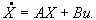

ОПТИМАЛЬНАЯ ТРАЕКТОРИЯ КАК ОСНОВА ПОСТРОЕНИЯ БАЗЫ ЗНАНИЙ НЕЧЕТКОГО ЛОГИЧЕСКОГО КОНТРОЛЛЕРА
В.Д. Бобко, Ю.Н. Золотухин, А.А. Нестеров.
Лаборатория нечетких технологийИнститут автоматики и электрометрии
Сибирское отделение РАН
630090 Новосибирск, просп. ак. Коптюга, 1
Россия
Тел.: (3832) 33 26 25, Факс: (3832) 33 38 63
E-mail: zolotukhin@iae.nsk.su
Ключевые слова: нечеткое управление, принцип максимума, ПИД-регулятор.
Abstract. In this paper a problem of improving of control quality by dynamic correction of PID - controller parameters is considered. A time optimal control law, based on the principle of a maximum, was found and is used as a desirable trajectory. Transition from time domain, in which optimal control is found, was carried out in phase space of system and fuzzy controller was developed.
1. Введение
Проблема создания базы правил представляет одну из ключевых задач при построении нечеткого логического контроллера. Для её решения используется интервьюирование опытного оператора, либо фиксирование решений, принимаемых оператором в различных ситуациях, либо, наконец, желательная траектория управления, полученная из каких-либо соображений.В данной работе в качестве желаемой траектории принято найденное по принципу максимума [1] оптимальное по быстродействию управление для замкнутой системы регулирования. Осуществлен переход из временной области, в которой найдено оптимальное управление, в фазовое пространство системы, что позволило непосредственно применить полученное решение для построения нечеткого контроллера.
2. Нахождение оптимальной траектории
 Рис.1 |
Здесь
Wp(S)= K1+K2/S+K3S (2.1)
уравнение системы имеет вид
(2.2)
Введем переменную (2.3)
и запишем уравнения движения в векторной форме  (2.4)
Здесь X и B-(n+1) - мерные векторы; A - матрица; u - скаляр. Для матрицы A и элементов вектора B имеем следующие соотношения:
(2.5)
b1 = 1;
b2 = b3 = ... = bn-1 = 0;
Предполагается, что параметры ПИД-регулятора в процессе управления можно изменять в некоторых интервалах
Пусть при u = u(t) и некоторых допустимых значениях параметров Ki система может быть переведена из состояния X(t0) = X0 в заданное состояние X(t1) = X1. Ставится задача перевода системы (2.5) из состояния X0 в состояние X1 за минимальное время t1 - t0 путем динамического изменения параметров Ki при выполнении условий (2.6). В соответствии с принципом максимума вводим сопряженную систему
(2.7)
и определяем параметры Ki из условия максимума функции
по Ki при условиях (2.6). Оставляя в (2.8) только члены, содержащие искомые параметры Ki, приходим к задаче максимизации по Ki функции
. (2.9)
Введем параметры
. (2.10)
Учитывая положительность коэффициента an, из (2.5), (2.6) и (2.9) получаем оптимальные значения коэффициентов Ki:
(2.11)
Соотношения (2.11), (2.4), (2.5) и (2.7) образуют замкнутую систему уравнений, описывающую оптимальный переходный процесс при соответствующем выборе - начальных условий для сопряженной системы (2.7). Выбор этих условий производится исходя из требования прохождения управляемой системы (2.7) через точку X(t1) = X1 в некоторый момент t = t1. Сопряженная система в соответствии с (2.11) определяет только моменты смены знаков управляющих параметров. В свою очередь эти моменты зависят от X0, u, X1. Однако, для режима перевода управляемой системы из одной точки статического равновесия X0 в другую точку статического равновесия u при ступенчатом изменении X1 моменты переключений управляющих параметров остаются фиксированными для данной системы и могут быть рассчитаны заранее.
|
Рис.2 |
Преодоление указанных недостатков можно искать на пути определения Ki в зависимости от фазовых координат системы с использованием методов нечеткого управления
3. Построение нечеткого контроллера
Основная функция, возлагаемая на нечеткий контроллер - формирование корректирующих поправок к коэффициентам K1, K2 и K3 ПИД-регулятора в зависимости от текущих координат системы. В этом случае ПИД-регулятор с корректирующим нечетким контроллером представляет собой нелинейную систему.Разработка нечеткого контроллера сводится к решению нескольких задач:
- выбору входных лингвистических переменных на основе анализа поведения замкнутой системы в рассчитанном ранее оптимальном режиме (см. рис. 2);
- назначению для каждой из лингвистических переменных набора лингвистических значений (термов);
- выбору для каждого из термов аппроксимирующего нечеткого множества;
- созданию базы правил контроллера на основе анализа совокупности значений "входные переменные - управление", полученной для оптимального режима;
- принятию адекватного проблеме механизма нечеткого вывода и выбору эффективного метода преобразования полученного нечеткого управления в "четкий" выходной сигнал.
Процедура обработки входной (четкой) информации в контроллере вкратце может быть описана следующим образом:
- текущие значения входных переменных преобразуются в лингвистические (фазифицируются);
- на основании полученных лингвистических значений и с использованием базы правил контроллера производится нечеткий логический вывод, в результате которого вычисляются лингвистические значения выходных переменных;
- заключительным этапом обработки является вычисление "четких" значений управляющих параметров (дефазификация).
Для решения рассматриваемой задачи необходима нечеткая система управления с несколькими входами и тремя выходами.
Функциональная схема системы управления с использованием динамически корректируемого ПИД-регулятора приведена на рис. 3.
|
рис. 3. |
В качестве примера реализации основных этапов разработки нечеткого контроллера на рис. 6. а-д представлены лингвистические термы и связанные с ними нечеткие множества для переменных "ошибка" и ее первой, второй и третьей производных, а также "выход", cоответственно.
|
Рис. 4 |
Рис.5 |
Результаты моделирования отклика на единичный скачок для системы с традиционным ПИД-регулятором (a),
систем с оптимальной коррекцией во временной области (b) и нечеткой коррекцией (c) приведены
на рис. 7. Исходные (опорные) значения параметров Ki
ПИД-регулятора рассчитаны методом Циглера-Николса
|
|
|
|
|
|
|
|
|
|